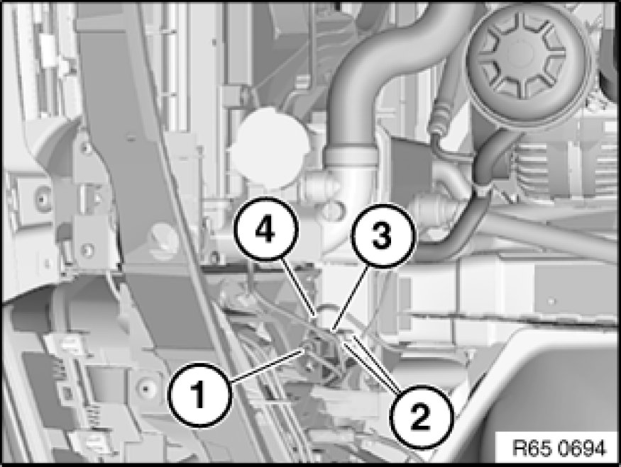

Removing and Installing/Replacing Front Left Sensor
65 77 532 - Removing and installing/replacing front left sensor

Necessary preliminary tasks:
- M54 only:
Remove intake filter housing.

Unfasten plug connection (1) and disconnect.
Release screws (2), tightening torque 65 77 3AZ Airbag Triggering Control.
Remove front sensor (3).
Installation:
Position negative lead (4) before screwing sensor on.